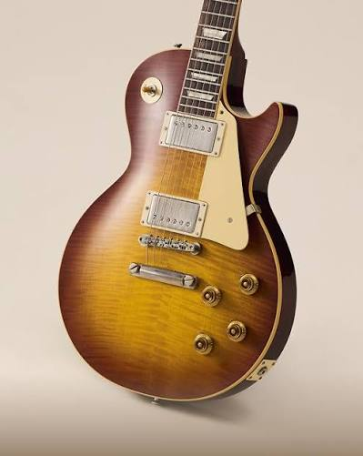

Electric guitars are a great instrument when playing for large crowds and for more volume control. They require an amplifier connected to a speaker for the electric guitar sound. Electric guitars work nearly the same as an Acoustic guitar but the metal strings that will react with the “pickups” sending a signal to the amplifier and speaker when vibrated. These pickups are magnets wrapped in thousands of coils of copper wire that will sense a disruption of the magnetic field when the metallic string directly above the pickup vibrates. When the disruption is sensed by the pickups, the amplifier will amplify the signal being sent to the speaker.